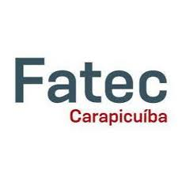

Sobre
O desenvolvimento deste simulado foi decorrente de um projeto, orientado pela professora Rita Félix da matéria de Programação para MicroInformatica do curso de Análise e Desenvolvimento de Sistemas da Fatec de Carapicuíba, com o objetivo de criar um simulador online utilizando perguntas da prova do ENEM, disponibilizada pelo INEP.
O projeto foi desenvolvido pelos alunos do primeiro semestre de Análise e Desenvolvimento de Sistema, em 2022.
Os autores do projeto são:
- SILVA, Ana
- BARBOSA, Guilherme
- SILVA, João
- RIBEIRO, Luiz
- BONALDI, Pedro
Orientadora: Profª MSC FELIX, Rita
Coorientador: Profº MSC LÓBIANCO, José

